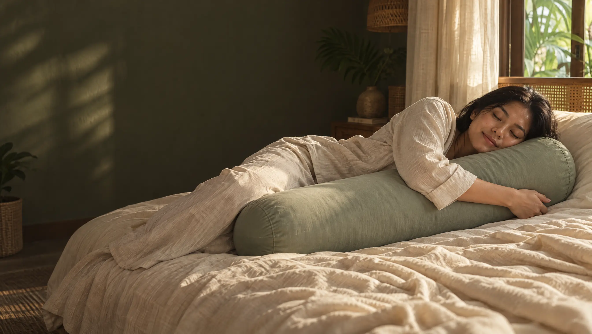
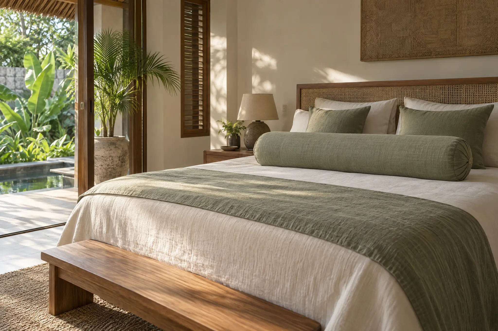
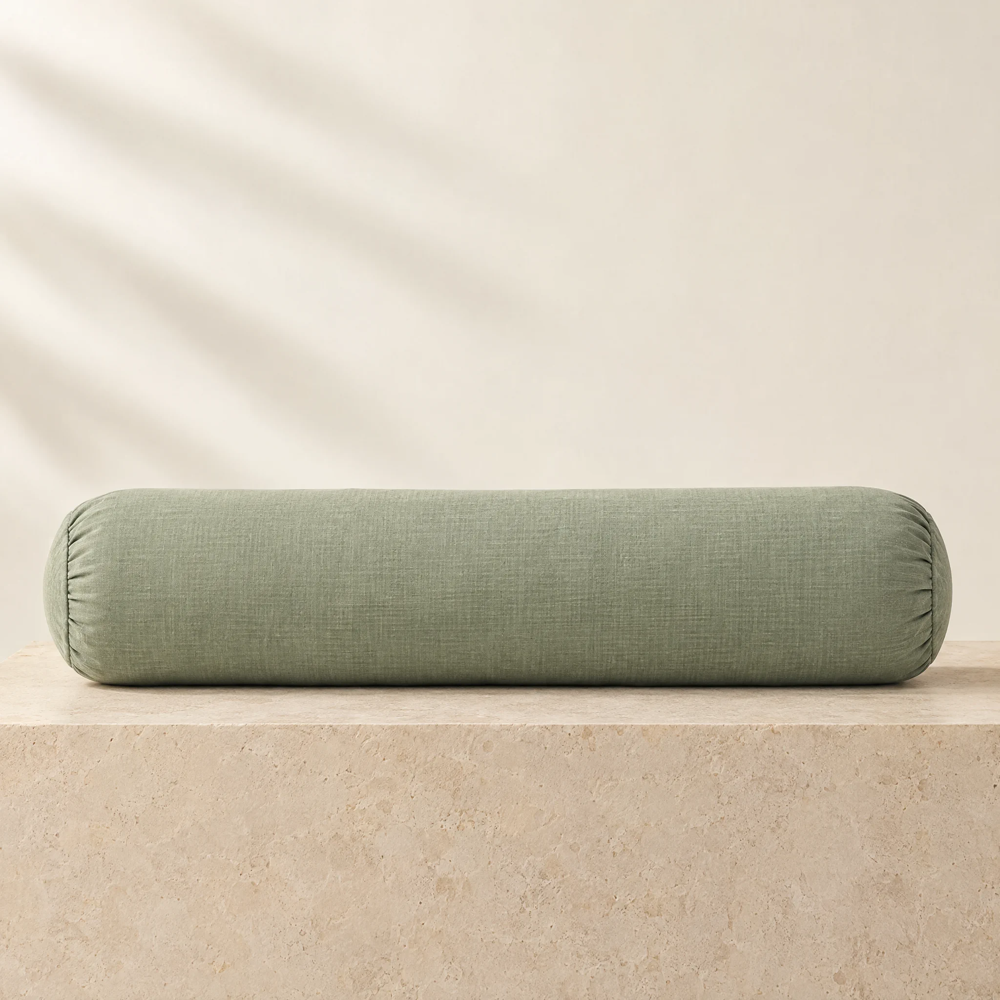
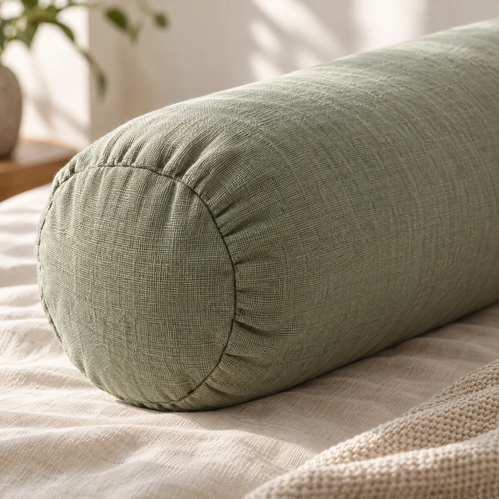
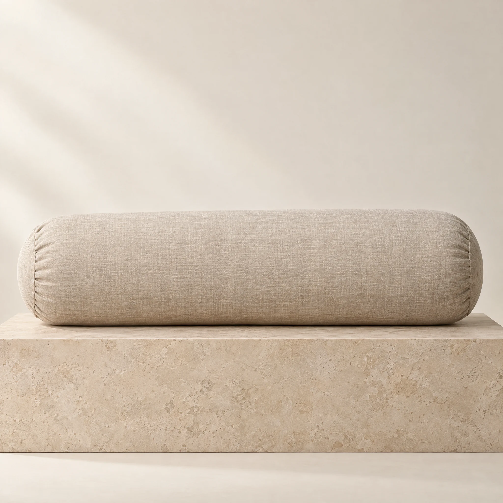
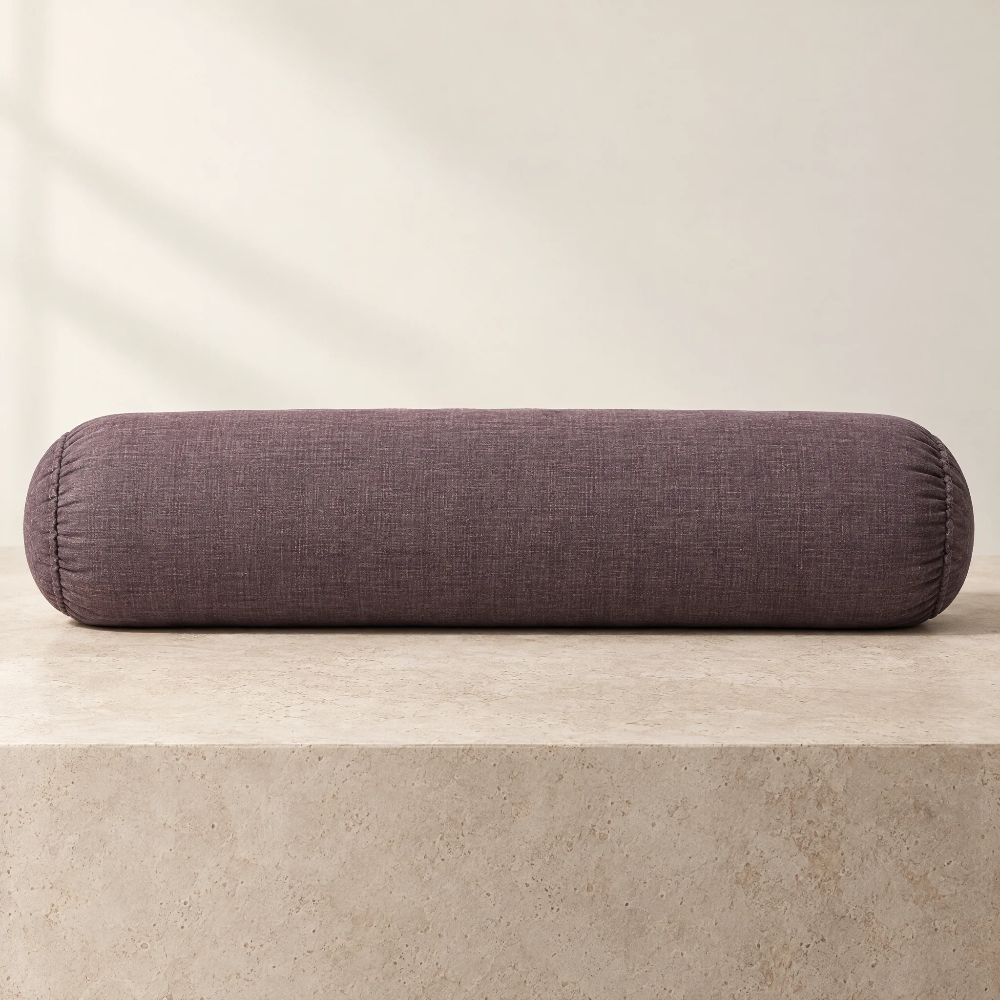
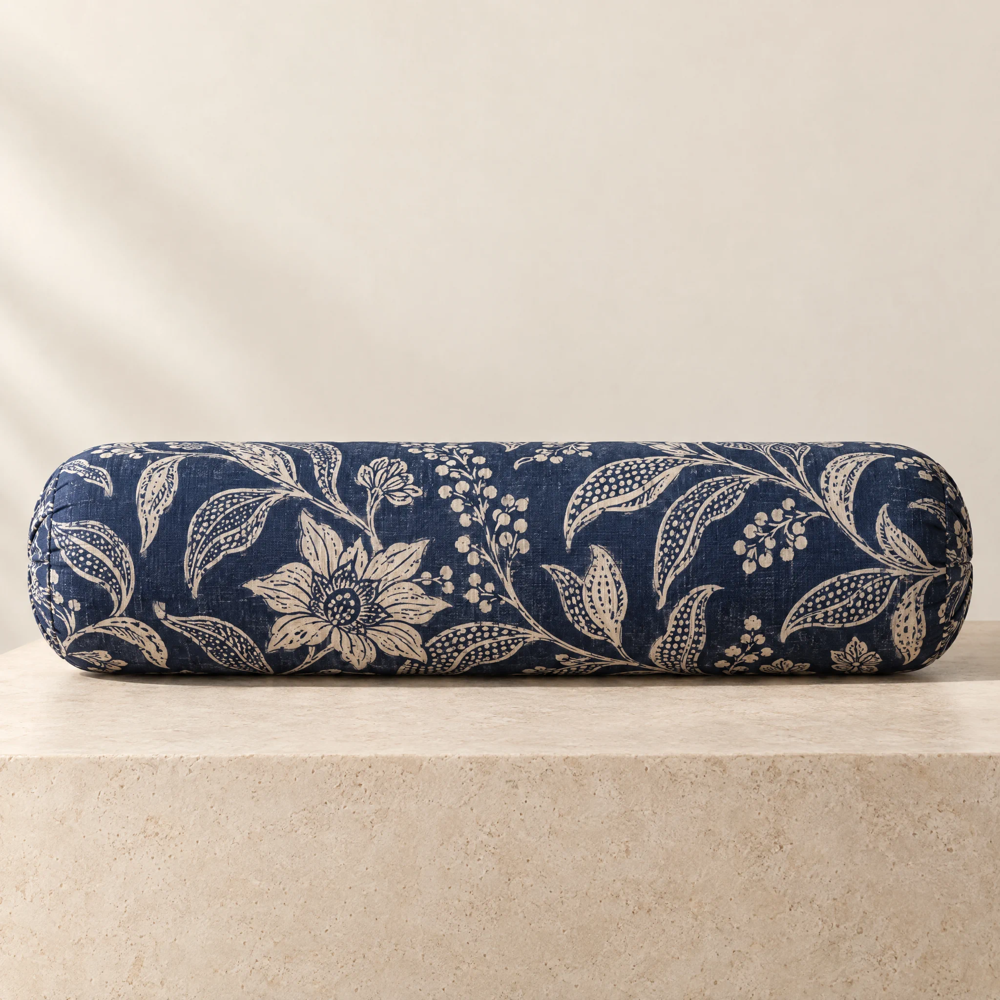
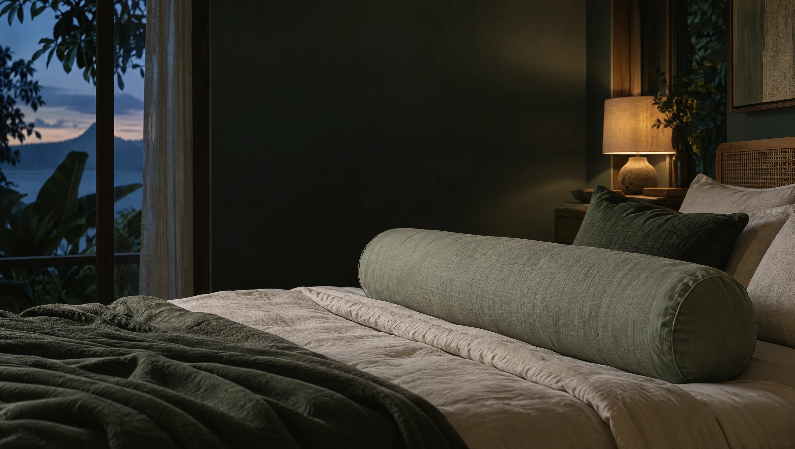

Ubud Sage
TENCEL™ Lyocell

For generations, Indonesians have held the guling close. TropiHug brings this familiar sleep ritual into the modern bedroom.
Bali, Indonesia · An Indonesian comfort, thoughtfully made for today.
The guling is the long bolster found in Indonesian homes — a comforting shape held close through generations.
It gives your arms and legs somewhere to rest, lifting them gently from a warm mattress so air can move around the body.
We keep its familiar form and pair it with considered materials and an adult length.

Guling is a Bahasa Indonesia word related to rolling. We keep the name and credit the tradition it comes from.
Tropical nights can be warm and restless. A full-length bolster gives your arms and legs a place to settle without adding another layer.

A familiar full-body bolster, thoughtfully made for the way you settle in at night.
A closer look
Meet its full-length form, removable cover and considered colours.
Made to be held close as you settle in.
Thoughtful fabric, designed for everyday care.
Find a tone that feels at home with you.
The cover is TENCEL™ Lyocell made from bamboo and eucalyptus. It feels smooth against the skin, while the kapok blend gives the bolster its soft, supportive shape.
Comfort for everyday rest. No medical claims.

TENCEL™ Lyocell

Organic cotton

French linen

Hand-dyed in Yogyakarta
Swipe or scroll to explore the colours.
Compressed to travel in a smaller footprint.
Tracked on its way to your door.
Unroll it and give it an hour to regain its full shape.
Something else on your mind? Write to us.
A pillow supports your head. A guling is a long bolster to hold close, giving your arms and legs somewhere comfortable to rest.
The cover is made from TENCEL™ Lyocell, a smooth fabric chosen for warm nights. The full-length shape lets your top arm and leg rest apart from the mattress.
It is 150 cm long and 22 cm in diameter. Place it alongside you, or across the bed when you are ready to sleep.
The kapok blend feels soft with a little support. The cover can be removed and machine washed on a cold, gentle cycle.
Join the waitlist below to hear when the first release is ready. We will share details as they are confirmed.

Leave your email to hear when TropiHug’s first release is ready.